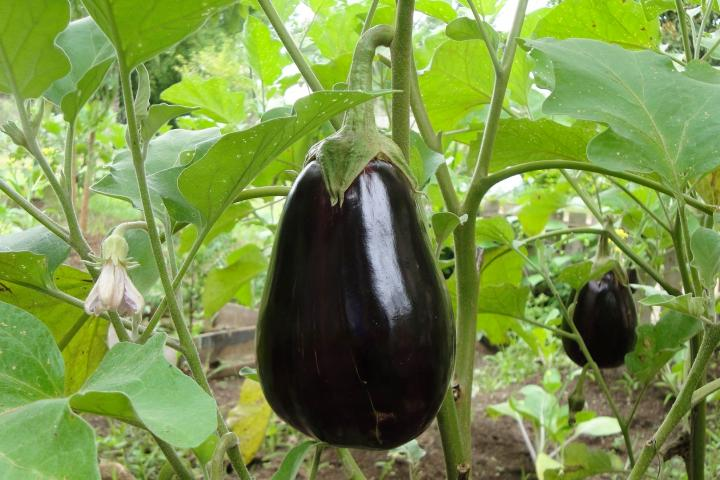
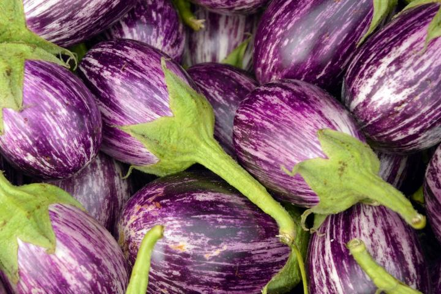

About Eggplant
Eggplant (Solanum melongena) grow wild in South Asia as a perennial plant, but these warm-season vegetables are treated by most North American gardeners as annuals. Given their tropical and subtropical heritage, eggplants do require relatively high temperatures, similar to tomatoes and peppers (which, like eggplants, are in the Nightshade family). They grow fastest when temperatures are between 70° and 85°F (21° and 30°C)—and very slowly during cooler weather.
Like tomatoes and peppers, eggplants develop and hang from the branches of a plant that can grow several feet in height.
Because they need warm soil, eggplants are usually purchased as 6- to 8-week-old transplants (or started indoors about two months in advance) to get a head start. Raised beds enriched with composted manure are an ideal growing place for eggplants because the soil warms more quickly. Eggplants are also great for containers and make lovely ornamental borders. In fact, there are quite a few ornamental eggplant varieties available today, whose inedible fruit have attractive variegated patterns.
Though eggplant fruits are usually a beautiful dark purple color, they can also be white, pink, green, black, or variegated purple-white. Their size and shape varies as well, ranging from the large, gourd-shaped eggplants you’ll commonly find in stores to the more exotic slender Japanese eggplant.
planting
Plant eggplant in a location that gets full sun—at least 6 to 8 hours of direct sunlight per day—for the best results.
Eggplant grows best in a well-drained sandy loam or loam soil that is fairly high in organic matter. To improve soil fertility, mix 1 inch of well-rotted manure, compost, or a general fertilizer such as 5-10-5 throughout the planting bed about a week before planting. (Apply 2 to 3 pounds per 100 square feet. Or, apply 1¼ pounds of 5-10-5 per 10 feet of row when the row spacing is 4 feet.) Soil pH should be between 5.8 and 6.5 for best growth.
Planting in Containers
If you’re growing eggplant in pots, use a dark-colored container that will absorb more sunlight. Put one plant per 5-gallon (or larger) pot in full sun and outdoors so it can be pollinated. Use a premium potting mix to avoid disease. Raised beds, which warm more quickly than ground soil, are also ideal for growing eggplant.
When to Plant Eggplant
- Start seeds indoors in flats or peat pots 6 to 8 weeks prior to the last spring frost date. Seeds germinate quickly at temperatures between 70° to 90°F (21° to 32°C). Alternatively, buy 6- to 8-week-old nursery transplants just before planting.
- Do not plant eggplant transplants into the garden until well after the last threat of frost.
- If purchasing transplants: Buy high-quality specimens. Do not purchase tall, spindly plants or young plants that already have blossoms (ideally, young plants should spend energy becoming established before they begin flowering).
How to Plant Eggplant
- Start seeds indoors, sowing them ¼ of an inch deep in flats or peat pots.
- After risk of the last spring frost has passed and daytime temperatures are 70° to 75°F (60° to 65°F at night), set seedlings in holes 24 to 30 inches apart in rows 3 feet apart. Use a covering of black plastic mulch to warm soils before setting out transplants if soil temperatures aren’t yet high enough.
- Immediately after planting (in ground or pot), set 24-inch-high stakes 1 to 2 inches from each plant or use cages to provide support and avoid disturbing the soil or roots later. Eggplant will fall over when laden with fruit.
- After planting, water well. Add a layer of mulch to retain moisture and suppress weeds.
- If you live in a cold climate, consider using row covers to keep the young eggplants warm and sheltered. Open the ends of the row covers on warm days so that bees may pollinate the eggplants’ flowers.

RECOMMENDED VARIETIES
The standard eggplant produces egg-shaped, glossy, purple-black fruit.
- ‘Black Beauty’ is the traditional eggplant size. One plant produces 4 to 6 large rounded fruit. Other regular types include ‘Black Magic’, ‘Purple Rain’, and ‘Early Bird’.
- ‘Black Bell’: classic oval to round, 6-inch, purple/black fruit; disease-resistant
- ‘Dusky’: classic pear-shaped, 6- to 7-inch, glossy purple/black fruit; excellent flavor; disease-resistant
Other interesting eggplant varieties include:
- ‘Applegreen’: oval, 5- to 6-inch, tender, pale green fruit
- ‘Bambino’: oval, walnut-size, purple/black fruit; 1 1/2-foot-tall plants
- ‘Casper’: cylindrical, 6-inch, snow-white fruit; mushroom flavor
- ‘Cloud Nine’: teardrop-shaped, 7-inch, white fruit; disease-resistant
- ‘Kermit’: Thai type; round; 2-inch, green fruit with white-striped shoulder
- ‘Rosita’: pear-shaped, 6- to 8-inch, rose-pink fruit; sweet flavor
The long, slender Japanese eggplant has a thinner skin and more delicate flavor.
- ‘Ichiban’: 10- to 12-inch, slim, purple/black fruit; bears until frost. Expect a dozen or more fruit from one plant.
- ‘Little Fingers’: finger-sized purple/black fruit; good for containers. Small-fruited varieties tend to be especially heavy bearers.
Ornamental varieties are edible, but have poor eating quality.
- ‘Easter Egg’ is an ornamental eggplant, usually white in color. (Not edible.)
